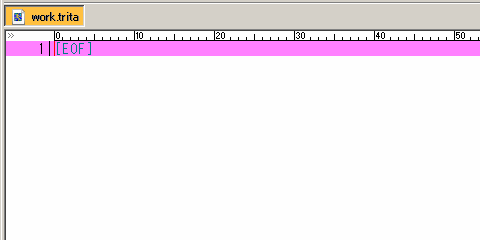
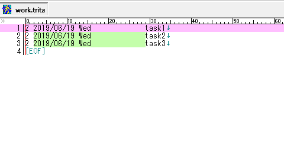
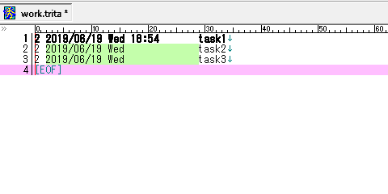
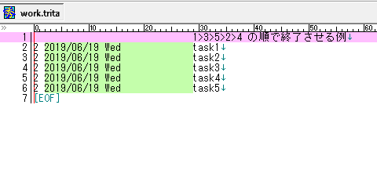
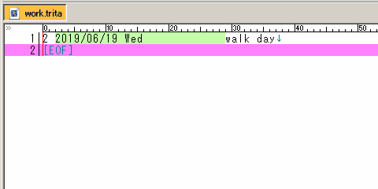
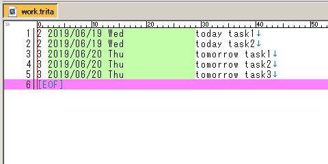
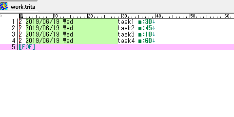

Tritask GIF ギャラリー¶
Tritask がどんなものかを知っていただくために GIF 画像を用意してみました。
各操作¶
Add task¶
タスクを追加する時に呼び出します。日付時刻部分などを自動で入力するので、手作業で新しく行をつくるよりも速いです。

Add in-box¶
Inbox(実行日のないタスク)をつくりたい時はこちらを呼び出します。Inbox は実行日有りのタスクよりも上に表示される性質があり、その名のとおりインボックス(未整理の事柄)として使えます。
Copy task¶
既存のタスク行を複製する操作です。何気に多用します。

Start task¶
タスクの開始 = 開始時刻の記入です。

End task¶
タスクの終了 = 終了時刻の記入です。開始時刻と併せて「いつ始めて、いつ終わったのか」がわかります。

以下は開始と終了を連続して行う例です。

Sort¶
Tritask で最も多用するであろうソート処理です。リストをキレイに並べます。

Walk day¶
地味に多用する日付操作です。たとえば「このタスクは明日でいいや」とするときに Walk day で 1 足したり、10 日後のタスクに対して「これ 5 日早めるか」としたいなら -5 したりします。

Walk day +1¶
Walk day でも 1 を足す(翌日にする)はよく使うので、専用に項目が設けられています。
Change to today¶
未来日のタスクを今日のタスクにする時に使います。

Today report¶
選択範囲のタスクに対して「計何時間かかるか」「全部終わったら何時何分になる見込みか」をレポートします。事前に m:30 のように見積もり属性の記載が必要です。

ちなみに範囲選択無しで呼び出すと「今日のタスクすべて」に対して実行できます。